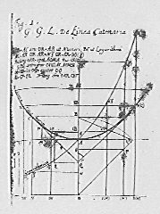

Die Kettenlinie

- Problemstellung
- Geometrische Eigenschaften der Kettenkurve
- Physikalisches Modell
- Mathematische Lösung
- Simulation Kette
Das ursprüngliche Projekt stammt von René Grothmann
Das JavaScript-Programm zur Simulation der Kette ist von B.Berchtold
Für weitere Infos siehe auch Katenoide auf wikipedia
©1997 - 2026 mathematik.ch | Suche 🔍